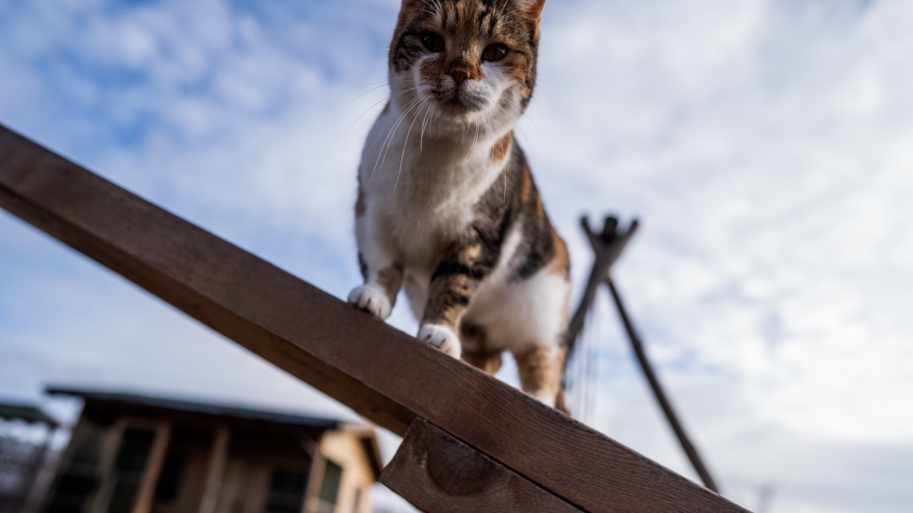

General Cat Care

After the age of 1 years old, kittens become adults now. Cats are very good at grooming themselves. However, now that your cat is big, its important to start grooming your cat with a
brush regularly. This will allow for a healthy coat for your cat as well as reduce the shedding and less incidence with hairballs. The next part is to always have a scratching post
somewhere in the house that is accessible. Cats have a need to scratch if their nails get to long so a place to scratch will help your furniture. A way to have your cat scratch
less would be to cut their nails once every two or three weeks. This will cut down on the need scratch. The next part is a litter box. If you have more then one floor then add a litter
box to each floor. Always scoop the litter box daily as well as clean the litter box fully once a week. No cat wants a dirty smelly litter box and can lead to cats pooping outside
the litter box. Lastly, always keep up to date with any vaccinations your cat would need and to at least visit